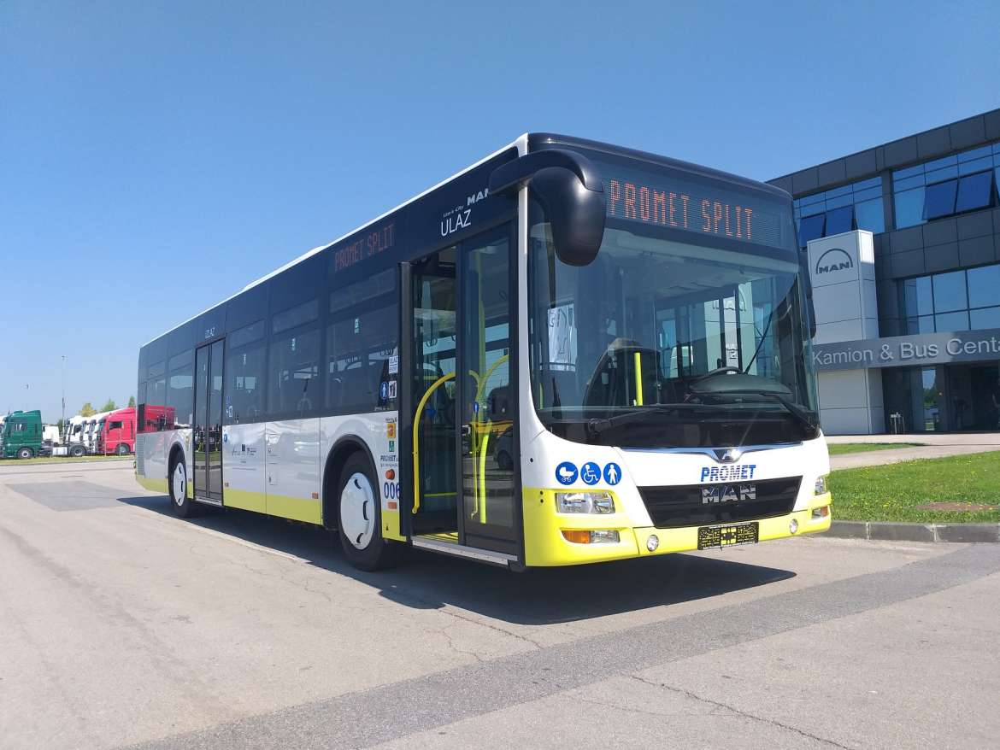

Transportation in Split

Bus
More than 20 bus lines go through the city at all times.
Ferry
More than 10 ferry lines link Split to Adriatic islands.
 Taxi and Uber
Taxi and Uber
Hunderds of taxists and uber drivers ready at all times.